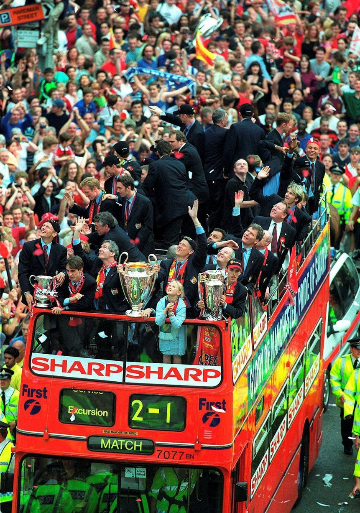
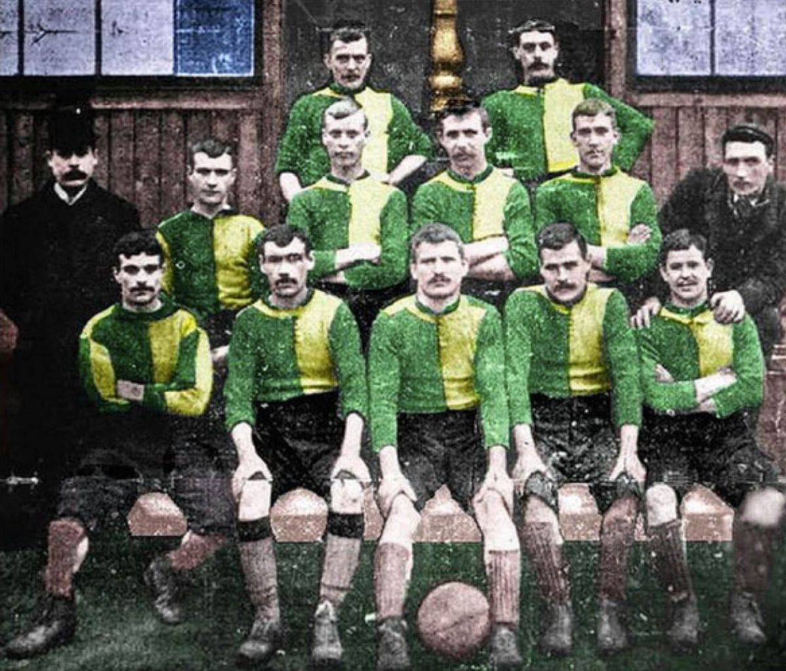
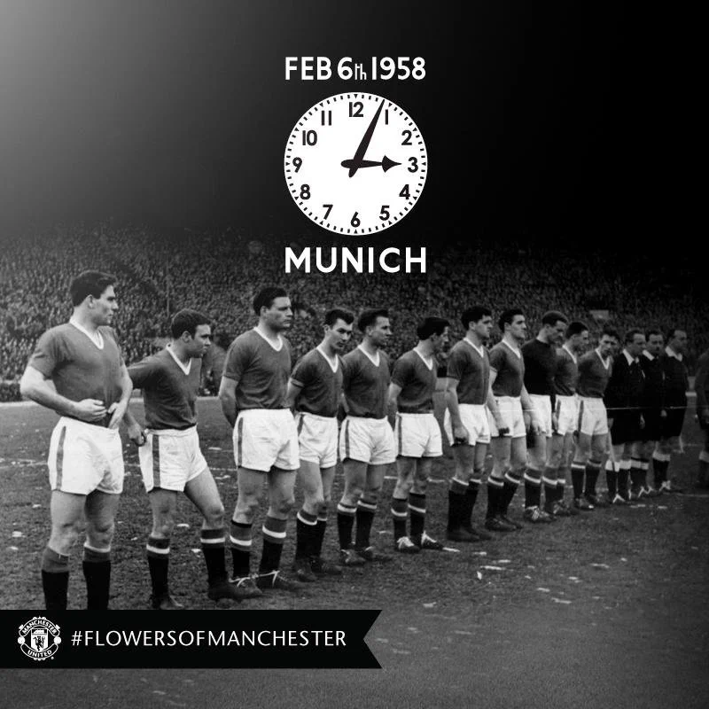
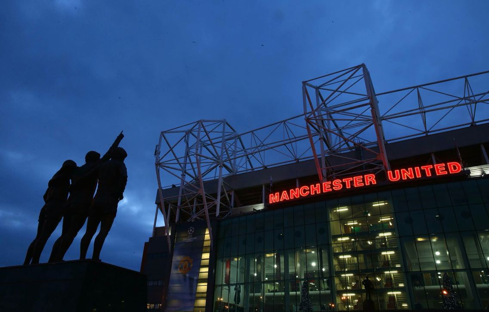

| Built over time |
From a railway workers' team to one of football's biggest names.

| 1878 — 1910 |
From Newton Heath LYR to Old Trafford.
- 1878 Newton Heath LYR
- 1892 Joined the Football League
- 1902 A new name, new hope
- 1908 First league title
- 1910 Old Trafford opens
| 1958 — 1986 |
Recovering after the Munich air disaster, the club won the European Cup in 1968.


| 1992 — 2024 |
The Premier League years brought 13 league titles, and Old Trafford has been home since 1910.